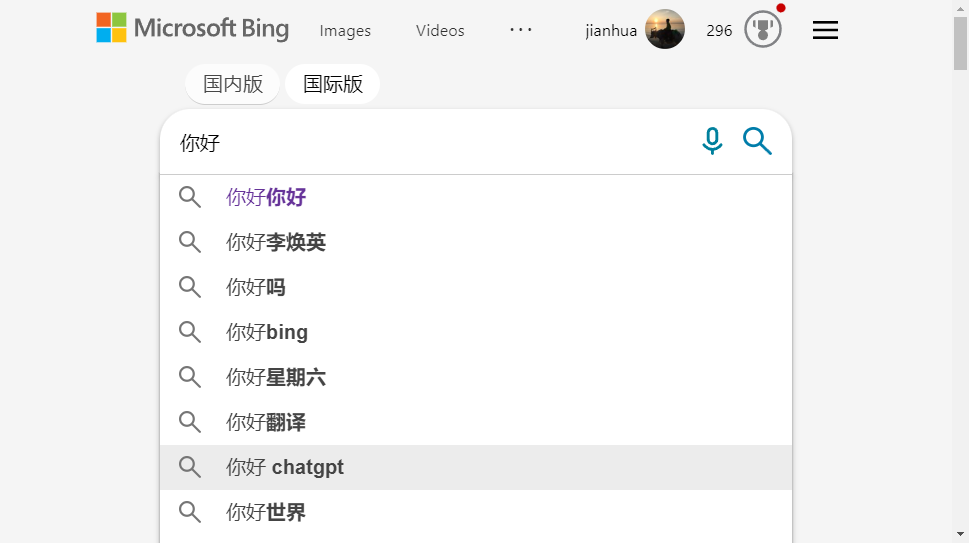

Ajax ⯐
简介
Ajax的全称是Asynchronous JavaScript and XML，即异步JavaScript和XML。Ajax是一种用于创建动态Web应用程序的技术。它使用JavaScript、XML和HTTP请求来实现异步数据交换。异步数据交换意味着Web应用程序可以在不刷新整个页面的情况下更新部分页面内容（局部刷新），从而提高用户体验。

基本原理
Ajax通过JavaScript和XMLHttpRequest对象实现异步通信，从而实现在不刷新整个页面的情况下更新页面的部分内容。
具体来说，当用户与页面交互时，JavaScript代码会通过XMLHttpRequest对象向服务器发送请求，服务器返回数据后，JavaScript代码再将数据更新到页面的指定位置，从而实现页面的动态更新。由于这个过程是异步的，因此用户可以在等待数据返回的同时继续进行其他操作，提高了用户体验。
发展历程
Ajax的发展历程可以分为以下几个阶段：
-
XMLHttpRequest的出现（1999年）：XMLHttpRequest是一种可以在不刷新页面的情况下向服务器发送请求和接收响应的技术。它最初是为了实现Gmail的邮件预览功能而开发的。
-
Ajax的命名（2005年）：Ajax这个词是由Jesse James Garrett在2005年提出的，它是Asynchronous JavaScript and XML的缩写。这个词的出现标志着Ajax开始成为一种独立的技术。
-
jQuery的出现（2006年）：jQuery是一种流行的JavaScript库，它简化了使用Ajax的过程，使得开发者可以更容易地使用Ajax技术。
-
HTML5的出现（2008年）：HTML5引入了一些新的API，如XMLHttpRequest Level 2和WebSockets，使得Ajax技术更加强大和灵活。
-
Ajax的普及（2010年至今）：随着Web应用程序的普及，Ajax技术也变得越来越重要。现在，几乎所有的Web应用程序都使用Ajax技术来实现动态交互和数据更新。同时，Ajax技术也在移动应用程序和桌面应用程序中得到了广泛的应用。
应用场景
Ajax技术可以应用于以下场景：
-
动态更新页面内容：使用Ajax技术可以在不刷新整个页面的情况下更新页面的部分内容，从而提高用户体验。
-
表单验证和提交：使用Ajax技术可以在用户提交表单之前对表单进行验证，从而减少服务器的负担和提高用户体验。
-
实时搜索和过滤：使用Ajax技术可以在用户输入关键字时实时搜索和过滤数据，从而提高搜索的效率和准确性。
-
购物车和结算：使用Ajax技术可以实现购物车和结算功能，从而提高用户购物的体验和效率。
-
即时通讯和聊天室：使用Ajax技术可以实现即时通讯和聊天室功能，从而提高用户的沟通效率和体验。
-
数据可视化和图表展示：使用Ajax技术可以将服务器返回的数据以图表的形式展示在页面上，从而提高数据的可视化程度和用户体验。
-
Web游戏和交互式应用：使用Ajax技术可以实现Web游戏和交互式应用，从而提高用户的娱乐体验和互动性。
特点
-
提高用户体验：使用Ajax技术可以在不刷新整个页面的情况下更新页面的部分内容，从而提高用户体验。
-
减少服务器负担：使用Ajax技术可以在用户提交表单之前对表单进行验证，从而减少服务器的负担。
-
提高搜索效率和准确性：使用Ajax技术可以在用户输入关键字时实时搜索和过滤数据，从而提高搜索的效率和准确性。
-
提高购物体验和效率：使用Ajax技术可以实现购物车和结算功能，从而提高用户购物的体验和效率。
-
提高沟通效率和体验：使用Ajax技术可以实现即时通讯和聊天室功能，从而提高用户的沟通效率和体验。
-
提高数据可视化程度和用户体验：使用Ajax技术可以将服务器返回的数据以图表的形式展示在页面上，从而提高数据的可视化程度和用户体验。
-
实现Web游戏和交互式应用：使用Ajax技术可以实现Web游戏和交互式应用，从而提高用户的娱乐体验和互动性。
-
对搜索引擎不友好：由于Ajax技术是通过JavaScript动态更新页面内容，因此对搜索引擎的抓取和索引不友好。
-
安全性问题：由于Ajax技术可以在不刷新页面的情况下向服务器发送请求和接收响应，因此存在一定的安全性问题，如跨站脚本攻击（XSS）和跨站请求伪造（CSRF）等。
-
对浏览器兼容性要求高：由于不同浏览器对JavaScript和Ajax的支持程度不同，因此在开发过程中需要考虑浏览器兼容性问题。
-
对服务器的压力较大：由于Ajax技术可以在不刷新页面的情况下向服务器发送请求和接收响应，因此可能会对服务器造成一定的压力。
原生Ajax
Javascript直接使用XMLHttpRequest对象进行Ajax请求步骤如下：
-
创建XMLHttpRequest对象：
-
设置请求参数：
其中，第一个参数表示请求的类型（GET或POST），第二个参数表示请求的URL，第三个参数表示是否异步（true表示异步，false表示同步）。
-
设置请求头部：
其中，第一个参数表示请求头部的名称，第二个参数表示请求头部的值。
-
发送请求：
如果是POST请求，需要在send()方法中传递请求参数，如下所示：
-
监听响应：
其中，readyState属性表示XMLHttpRequest对象的状态，4表示服务器已经返回响应数据；status属性表示服务器返回的状态码，200表示请求成功。
总的示例代码如下：
在实际开发中，可以根据具体需求设置请求参数、请求头部和请求方法，以及处理响应数据。
Ajax框架
jQuery
jQuery是一个流行的JavaScript库，提供了方便的方法来处理Ajax请求。下面是使用jQuery处理Ajax的示例代码：
-
发送GET请求：
其中，第一个参数表示请求的URL，第二个参数是回调函数，用于处理服务器返回的数据。
-
发送POST请求：
其中，第一个参数表示请求的URL，第二个参数是请求参数，第三个参数是回调函数，用于处理服务器返回的数据。
-
发送JSON数据：
其中，url表示请求的URL，type表示请求的类型，contentType表示请求头部的Content-Type，data表示请求的数据，success表示请求成功后的回调函数。
总之，使用jQuery处理Ajax请求可以简化代码，提高开发效率。需要注意的是，jQuery需要在页面中引入相应的库文件。
axios
Axios是一个流行的JavaScript库，用于处理Ajax请求。下面是使用Axios处理Ajax的示例代码：
-
发送GET请求：
其中，get()方法用于发送GET请求，then()方法用于处理服务器返回的数据，catch()方法用于处理请求失败的情况。
-
发送POST请求：
其中，post()方法用于发送POST请求，第一个参数表示请求的URL，第二个参数表示请求的数据，then()方法用于处理服务器返回的数据，catch()方法用于处理请求失败的情况。
-
发送JSON数据：
其中，method表示请求的类型，url表示请求的URL，headers表示请求头部信息，data表示请求的数据，then()方法用于处理服务器返回的数据，catch()方法用于处理请求失败的情况。
总之，使用Axios处理Ajax请求可以简化代码，提高开发效率。需要注意的是，Axios需要在页面中引入相应的库文件。